[Ubuntu] JavaインストールとEclipseをインストールする方法
こんにちは。明月です。
UbuntuのOSはCentOSと比べてサーバよりデスクトップで使う方が多いです。なので、CentOSではプログラム開発することより完成したプログラムをデプロイすることが多いです。
でもUbuntuの場合はデスクトップで使うのでデプロイより開発する方法が多いですね。
JavaをインストールとJavaのIDEのEclipseをインストールして開発完了を作ってみましょう。
初期UbuntuをインストールするオプションでJavaをインストールする時もあるので一応インストールされているかを確認しましょう。
Java -version
上のコマンドでJavaバージョン情報がでるとインストールされているし、「not found」というメッセージがでるとインストールされてないことです。
インストールは「apt install default-jdk」でインストールしました。
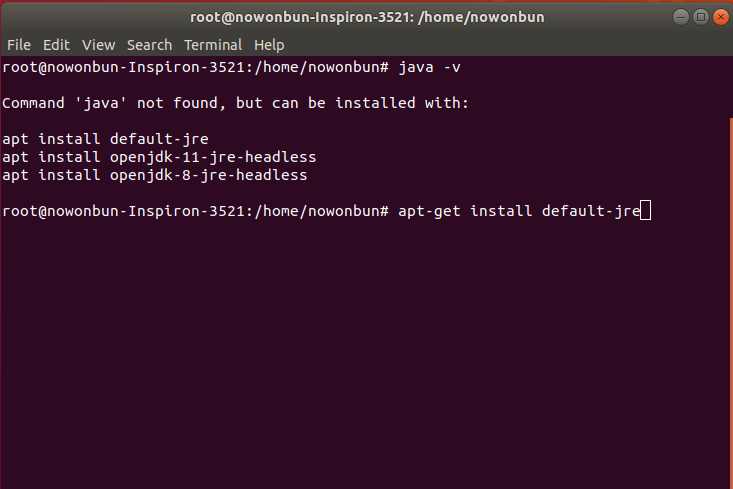
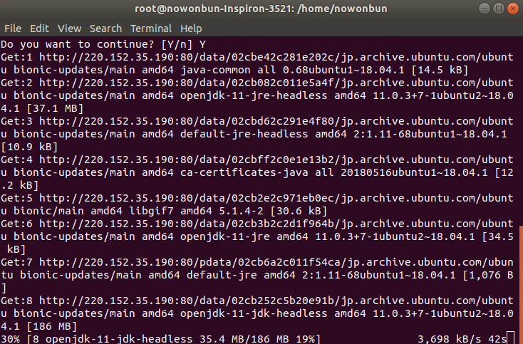
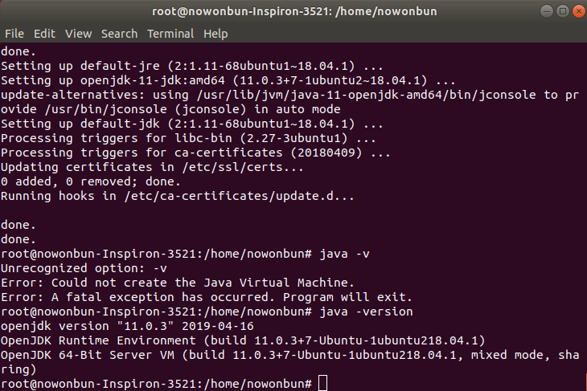
(イメージは間違ってjreをインストールしました。jdkも同じです。)
Javaがインストールされたらeclipseサイトに接続しましょう。
link - https://www.eclipse.org/downloads/
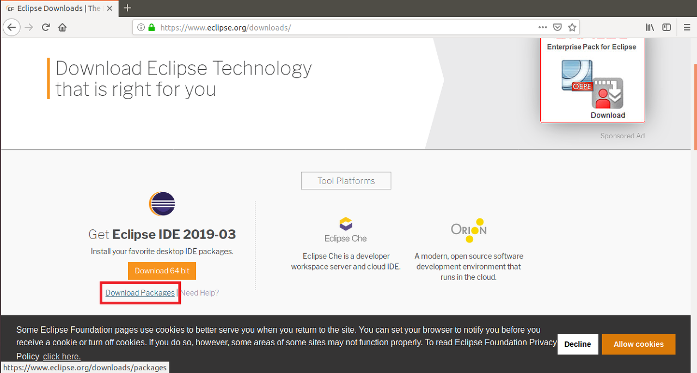
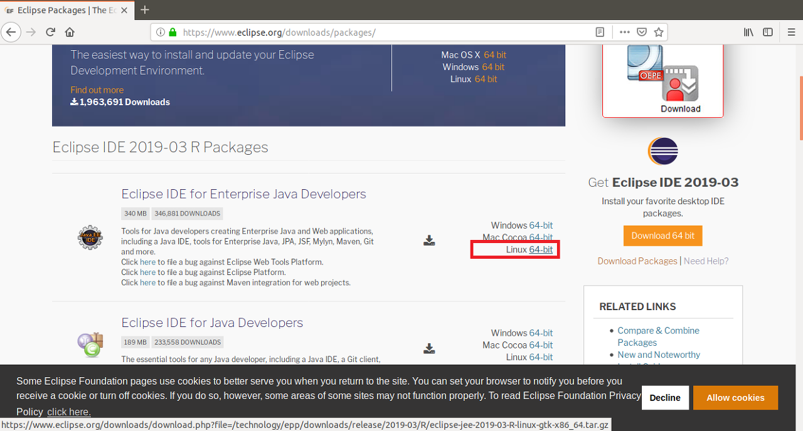
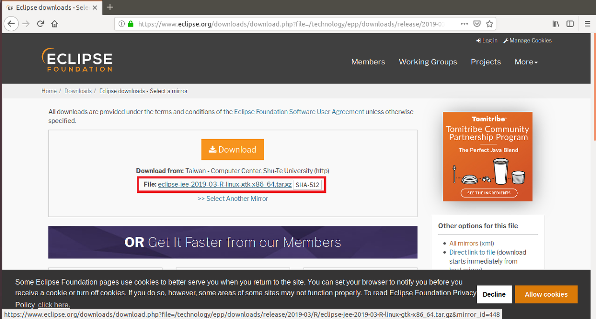
ダウンロードが完了したら圧縮を解凍しましょう。
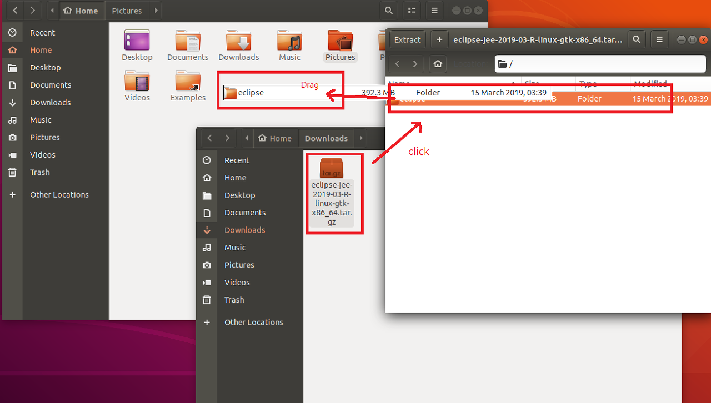
これから実行しましょう。
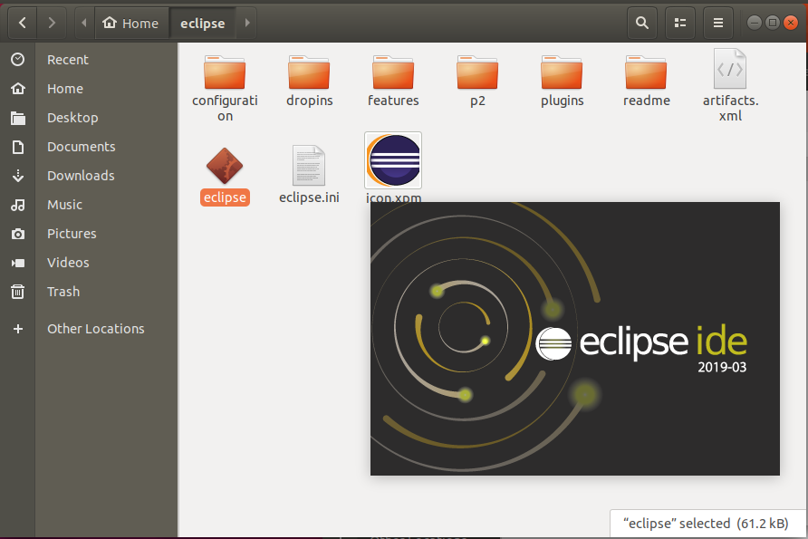
正常に実行しました。
eclipseの場合はショートカットはWindowみたいに簡単に作られないですね。ショートカットファイルを作成しましょう。
[Desktop Entry]
Type=Application
Name=Eclipse
Comment=Eclipse Integrated Development Environment
Icon=/home/nowonbun/eclipse/icon.xpm
Exec=/home/nowonbun/eclipse/eclipse
Terminal=false
Categories=Development;IDE;Java;
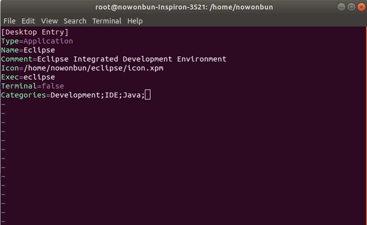
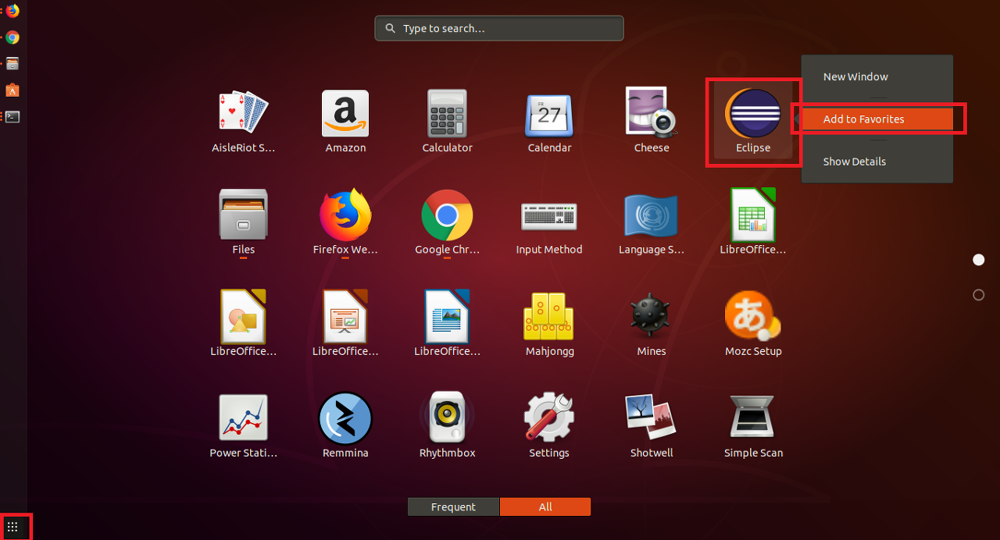
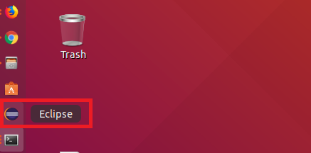
「Devlopment note / Linux」の他投稿
- [CentOS] Linux環境(CentOS)でCassandra(NoSQL DB)をインストールする方法(DBeaverブラウザでNoSQL使い方)2021/11/12 17:33:58
- [CentOs] ジェンキンス(Jenkins)をインストールする方法2021/10/18 18:28:58
- [Ubuntu] PHPをインストール、Composer設定する方法2019/11/13 07:32:21
- [Ubuntu] テーマ(Arc)を変更する方法(tweak)2019/11/12 07:32:13
- [Ubuntu] Apache2をインストールする方法2019/11/11 07:28:28
- [Ubuntu] 「acquire the dpkg frontend lock」のエラーを解決方法2019/11/10 22:19:34
- [Ubuntu] JavaインストールとEclipseをインストールする方法2019/11/08 07:29:55
- [Ubuntu] MariaDB(Mysql)をインストールする方法2019/11/07 07:50:58
- [Ubuntu] Chromeをインストールする方法2019/11/06 19:48:19
- [CentOS] YUMについて、YUMが出来ない場合処理方法2019/11/05 07:17:58
- [CentOS] MariaDB(Mysql)をインストール2019/11/04 18:35:10
- [CentOS] FTPインストールする方法(vsftpd)2019/11/01 07:29:57
- [CentOS] SAMBAインストール方法2019/10/30 07:38:57
- [CentOS] PHPインストールする方法2019/10/29 20:09:03
最新投稿
- [Design pattern] 3-4. イテレータパターン(Iterator pattern)2021/11/15 19:31:28
- [CentOS] Linux環境(CentOS)でCassandra(NoSQL DB)をインストールする方法(DBeaverブラウザでNoSQL使い方)2021/11/12 17:33:58
- [Design pattern] 3-3. コマンドパターン(Command pattern)2021/11/05 17:01:42
- [Window] apache-tomcatでロードバランシング(Load balancing)する方法とセッションクラスタリング（セッション共有）2021/11/05 16:58:45
- [Window] Apacheでmod_jkとmod_proxyの差異、apacheでtomcatのwebsocketのプロキシフォーワードする方法2021/11/05 16:55:05
- [PHP] Apache環境の同じホスト中でPHPとJava(Servlet)を同時に起動、運用する方法2021/11/05 16:52:04
- [C#] 61. ウィンドウフォーム(Window form)でスレッド(Thread)を使い方、クロススレッド問題解決2021/11/04 19:29:51
- [Design pattern] 3-2. 責任の連鎖パターン(Chain of responsibility pattern)2021/11/04 19:27:58
- [Design pattern] 3-1. ストラテジーパターン(Strategy pattern)2021/11/03 18:38:52
- [C#] 60. ウィンドウフォーム(Window form)のイベント設定する方法2021/11/02 21:18:08
- [Design pattern] 2-7. ファサードパターン(Facade pattern)2021/11/02 19:32:31
- [Design pattern] 2-6. プロキシパターン(Proxy pattern)2021/11/01 19:42:44
- [Design pattern] 2-5. フライウェイトパターン(Flyweight pattern)2021/10/29 19:48:27
- [C#] 59. ウィンドウフォーム(Window form)にコントロール(Control)を使い方法2021/10/29 19:45:43
- [Design pattern] 2-4. デコレーターパターン(Decorator pattern)2021/10/28 20:11:13